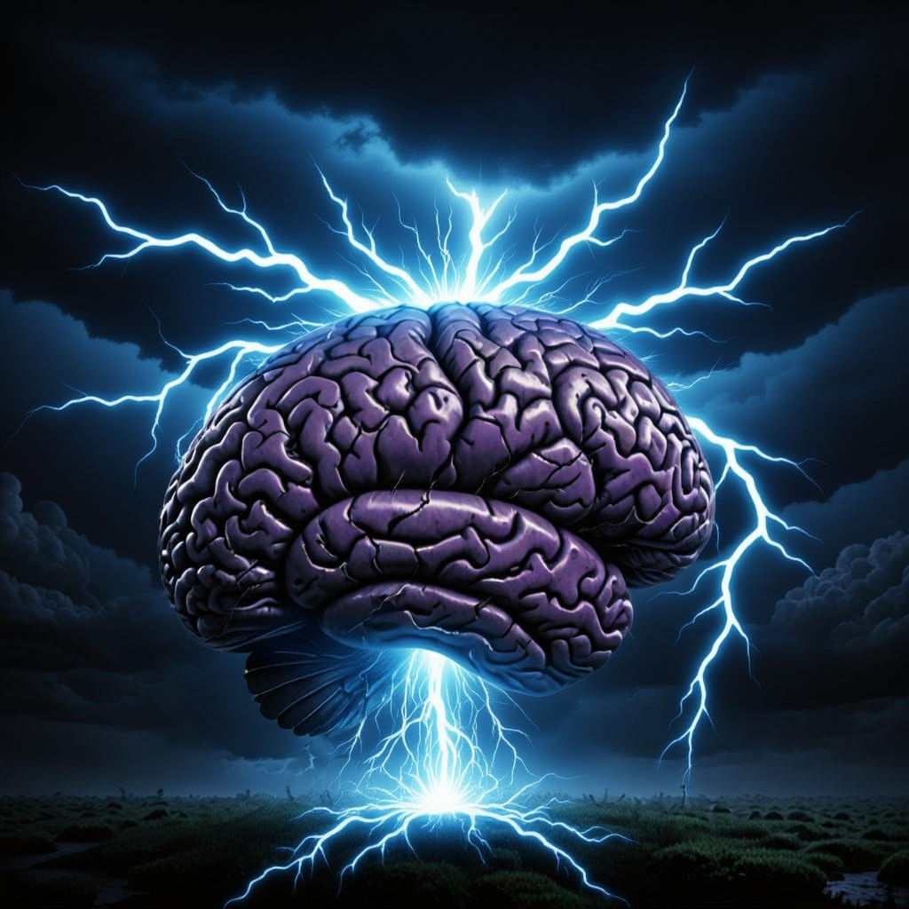

<div style="position: fixed; right: 40px; top: 50%; transform: translateY(-50%); text-align: right; z-index: 1000; background: rgba(255,255,255,0.85); padding: 8px 12px; border-radius: 10px; box-shadow: 0 2px 8px rgba(0,0,0,0.10);">
  <div style="margin-bottom: 8px;"> Normal Mode</div>
  <div style="margin-bottom: 8px;"> Bad Brain Day</div>
  <div style="margin-bottom: 8px;"> Nope Mode</div>
  <div style="margin-bottom: 8px;"> Semi-Nope</div>
  <div> Recovery</div>
</div>
